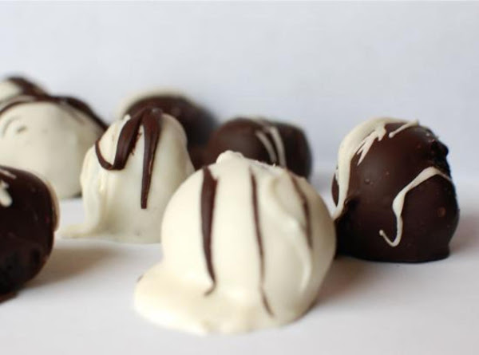

Oreo Bon Bons

Description
These Oreo bon bons are a great dessert and easy to make. They can be great for birthdays
and holidays. Combining crushed Oreos, cream cheese, and choclate these bon bons can satisy
anyone's sweet tooth.
Ingredients
- (1 lb) package of Oreo cookies
- 8 ounces cream cheese
- (16 ounce) package baking chocolate
- (16 ounce) package melting chocolate
Steps
- Place Oreos in a food processor until roughly chopped.
- Add cream cheese and process until completely combined.
- Line baking pan with aluminum foil.
- Roll into ball and place onto foil.
- Place in freezer until firm.
- Melt chocolate according to directions on package.
- Dip balls into chocolate to cover, place back on foil.
- Melt chips according to package.
- Pour melted chips into ziplcok bag and cut the top off one corner.
- Drizzle as desired.
- Let chocolate set and serve.